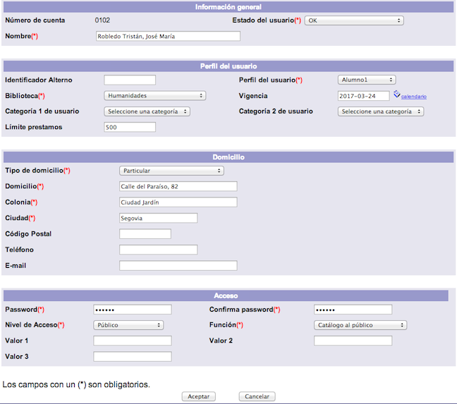
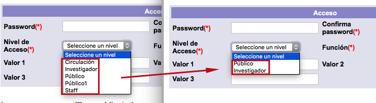

Esta opción permite crear nuevos registros de usuarios del sistema. Para esto es necesario asignar un número de cuenta a cada uno de ellos. Existen cuatro formas de crear usuarios en el sistema Janium:
-
Función Creación de usuarios en el módulo de Circulación (la que nos ocupa aquí).
-
Carga masiva de usuarios en el módulo de Circulación.
-
Complemento “auto-registro” de usuarios.
-
API de creación de usuarios.
El procedimiento a seguir para la primera de ellas es el siguiente:
- Hacer clic sobre la opción Usuarios de la barra de herramientas del módulo.

- Escribir el número de cuenta del usuario en el campo de texto de la sección Crear usuario. Hacer clic en el botón Crear.

- Se despliega la ficha de información del usuario. Introducir los datos correspondientes y hacer clic en el botón Aceptar.Los tipos de datos que se pueden encontrar aquí son los siguientes: Información general
- Número de cuenta: elemento de identificación del usuario asignado en el paso anterior. Aquí solamente se visualiza.
- Estado del usuario: situación administrativa en la que se encuentra el usuario y que define su relación con la institución. Algunos estados pueden ser: OK, que indica que el usuario no tiene ningún problema con la institución; Bloqueado por multas, que indica que el usuario debe multas y no puede realizar ningún préstamo o solicitud a la institución a menos que un operador autorizado lo permita; Suspendido, que indica que el usuario no tiene ningún derecho hasta que se haya resuelto su situación; Bloqueado y suspendido, que indica que el usuario, además de estar bloqueado por tener alguna multa, ha sido suspendido.
- Nombre: nombre completo del usuario. Siguiendo las políticas de la institución, debe ingresarse de forma normalizada para que al buscarlo, la lista de usuarios no muestre información contradictoria o incompleta. Se recomienda introducir siempre los apellidos y luego el nombre. Pueden ingresarse todos con mayúsculas o todos con minúsculas, pero conviene hacerlo siempre de la misma manera. Por ejemplo: GUEVARA HERNANDEZ ANA. Perfil del usuario: una institución puede agrupar a sus usuarios para diferenciarlos y otorgarles mayores o menores privilegios. Cada grupo es un perfil, y cada usuario puede tener más de un perfil si es necesario. Por ejemplo, puede pertenecer a una institución como alumno y como empleado, en cuyo caso tendría dos perfiles asociados.
- Identificador alterno: número de identificación, adicional al ID y al número de cuenta, que puede utilizarse cuando no se conoce o no se puede disponer de este último. Este identificador alterno es proporcionado por la institución y es aconsejable que el usuario lo conozca y recuerde.
- Perfil del usuario: elemento que determina cómo se le prestarán al usuario los diferentes materiales de la institución. Cada perfil tiene sus propios parámetros respecto del número de materiales a prestar, apartados que se pueden realizar o fechas de vencimiento de privilegios. Como ya se ha explicado, pueden asignarse distintos perfiles para un mismo usuario.
- Biblioteca: biblioteca a la que pertenece el usuario. Si el usuario tiene más de un perfil pero pertenece a la misma biblioteca, todos sus perfiles contendrán el mismo valor en este campo.
- Vigencia: fecha en que expiran los privilegios del usuario. Por ejemplo, si se trata de un usuario empleado por sólo seis meses, aquí se colocaría la fecha en que termina su relación con la biblioteca. Si se trata de estudiantes, puede ingresarse la fecha en que termina el semestre o curso completo.
- Categoría 1 de usuario: categoría para clasificar al usuario y utilizarla en informes o estadísticas.
- Categoría 2 de usuario: segunda categoría para clasificar al usuario y utilizarla en informes y estadísticas.
- Límite préstamos: número de préstamos que se le pueden hacer al usuario. Si este límite queda vacío, se aplica el valor predeterminado definido para el tipo de perfil al que va a pertenecer este usuario. Por ejemplo, todos los usuarios con perfil de alumnos pueden tener permitido un número de 5 préstamos, pues así está definido en la política del perfil correspondiente a alumnos; pero si se desea hacer una excepción a un usuario específico, en este campo se puede poner un número diferente de préstamos. Domicilio
- Tipo domicilio: en este campo generalmente se registra el domicilio particular. No obstante, un usuario puede tener más de un domicilio, por lo que puede introducirse también el de su trabajo u otro. De ser así, los demás tipos se registran después de guardar todos los datos del usuario. Los tipos de domicilio disponibles en el sistema son Local, Lugar de origen, Particular y Temporal. La institución puede utilizar cada uno conforme a sus necesidades. Si se requiere de un nuevo tipo de domicilio, también puede agregarse.
- Domicilio: calle y número del domicilio del usuario.
- Colonia: división territorial donde se encuentra el domicilio del usuario.
- Ciudad: ciudad del domicilio del usuario.
- Código postal: código postal del domicilio del usuario.
- Teléfono: número de teléfono de contacto del usuario.
- E-mail: cuenta de correo electrónico de contacto del usuario. Esta cuenta será utilizada para el envío de notificaciones por parte de la institución. Acceso
- Password: conjunto de 6 a 15 caracteres alfanuméricos.
- Confirma password: contraseña ingresada en el campo anterior. Esta acción forma parte del proceso de validación de la misma.
- Nivel de acceso: nivel de seguridad que tendrá asignado el usuario. Este campo relacionará al usuario con un nivel que le permitirá ver registros y campos bibliográficos que tengan el mismo nivel. Si un registro o campo tiene un nivel de seguridad igual o menor al del usuario, éste podrá verlos en el catálogo al público. Si el nivel es mayor, el usuario no podrá verlos. Estos niveles se pueden modificar de acuerdo a las políticas de la institución.
- Función: campo que determina el ámbito de actuación y las acciones que va a poder realizar el usuario con base en él y en el nivel de acceso elegido.
- Valor 1, Valor 2 y Valor 3: campos destinados a usos futuros del sistema.

- El sistema muestra de nuevo la información registrada para su verificación. Hacer clic en el botón Aceptar.

- El sistema regresa a la pantalla de administración de usuarios con el nombre del usuario creado como registro activo.

Configuración de usuarios de staff
Durante el proceso de creación de un usuario, cuando en el campo del formulario Nivel de acceso se selecciona el valor staff y en el campo Función, por ejemplo, Circulación (lo que significa que se va a crear un usuario del módulo de Circulación), el sistema da paso a una nueva pantalla para definir los privilegios de dicho usuario.

Después de haber confirmado la información introducida en el paso anterior, se presenta una nueva pantalla que presenta los siguientes campos:
{kind=link}
- Número de cuenta: cuenta del operador u operadores del módulo de circulación para la que se van a definir los privilegios.
- Prestar: 1 = función activa. 0 = función inactiva.
- Devolver: 1 = función activa. 0 = función inactiva.
- Renovar: 1 = función activa. 0 = función inactiva.
- Reservar: 1 = función activa. 0 = función inactiva.
- Crear Usuario: 1 = función activa. 0 = función inactiva.
- Editar Usuario: 1 = función activa. 0 = función inactiva.
- Borrar Usuario: 1 = función activa. 0 = función inactiva.
- Crear Multa: 1 = función activa. 0 = función inactiva.
- Cobrar Multa: 1 = función activa. 0 = función inactiva.
- Borrar Multa: 1 = función activa. 0 = función inactiva.
- Condonar Multa: 1 = función activa. 0 = función inactiva.
- Crear apartado: 1 = función activa. 0 = función inactiva.
- Editar apartado: 1 = función activa. 0 = función inactiva.
- Borrar apartado: 1 = función activa. 0 = función inactiva.
- Revisar Solicitudes: 1 = función activa. 0 = función inactiva.
- Borrar Solicitudes: 1 = función activa. 0 = función inactiva.
- Crear Usuario de Circulación: 1 = función activa. 0 = función inactiva.
- Crear Constancias: 1 = función activa. 0 = función inactiva.
- Crear Copia: 1 = función activa. 0 = función inactiva.
- Crear Registros: 1 = función activa. 0 = función inactiva.
- Pasar por Alto Bloqueo de usuario: 1 = función activa. 0 = función inactiva.
- Pasar por Alto Vencimiento de Privilegios: 1 = función activa. 0 = función inactiva.
- Pasar por Alto Máximo de Préstamos: 1 = función activa. 0 = función inactiva.
- Pasar por Alto Material Vencido: 1 = función activa. 0 = función inactiva.
- Pasar por Alto Total de Préstamos: 1 = función activa. 0 = función inactiva.
- Pasar por Alto Material no circula: 1 = función activa. 0 = función inactiva.
- Pasar por Alto Nivel del usuario: 1 = función activa. 0 = función inactiva.
- Pasar por Alto Apartado: 1 = función activa. 0 = función inactiva.
- Pasar por Alto Límite por tipo de material: 1 = función activa. 0 = función inactiva.
- Instrucciones: campo que debe completarse con los códigos indicados en el siguiente gráfico, en función de los privilegios que se quieran asignar al operador del módulo:
{kind=link}
{kind=link}
Agrupación de niveles de seguridad por funciones
Es posible configurar el sistema para ocultar o deshabilitar determinados niveles de acceso, si la institución así lo decide, para evitar que aquellos operadores de Circulación que no tengan privilegios para crear cierto tipo de usuarios, puedan asignar permisos a usuarios no autorizados.

Esta configuración debe ser solicitada al personal del departamento de Soporte Técnico.